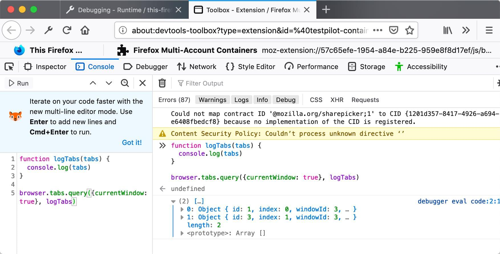

JavaScript APIs
JavaScript APIs for WebExtensions can be used inside the extension's background scripts and in any other documents bundled with the extension, including browser action or page action popups, sidebars, options pages, or new tab pages. A few of these APIs can also be accessed by an extension's content scripts. (See the list in the content script guide.)
To use the more powerful APIs, you need to request permission in your extension's manifest.json.
You can access the APIs using the browser namespace:
function logTabs(tabs) {
console.log(tabs);
}
browser.tabs.query({ currentWindow: true }, logTabs);
Many of the APIs are asynchronous, returning a Promise:
function logCookie(c) {
console.log(c);
}
function logError(e) {
console.error(e);
}
let setCookie = browser.cookies.set({ url: "https://developer.mozilla.org/" });
setCookie.then(logCookie, logError);
Browser API differences
Note that this is different from Google Chrome's extension system, which uses the chrome namespace instead of browser, and which uses callbacks instead of promises for asynchronous functions in Manifest V2. As a porting aid, the Firefox implementation of WebExtensions APIs supports chrome and callbacks as well as browser and promises. Mozilla has also written a polyfill which enables code that uses browser and promises to work unchanged in Chrome: https://github.com/mozilla/webextension-polyfill.
Firefox also implements these APIs under the chrome namespace using callbacks. This allows code written for Chrome to run largely unchanged in Firefox for the APIs documented here.
Not all browsers support all the APIs: for the details, see Browser support for JavaScript APIs and Chrome incompatibilities.
Examples
Throughout the JavaScript API listings, short code examples illustrate how the API is used. You can experiment with most of these examples using the console in the Toolbox. However, you need Toolbox running in the context of a web extension. To do this, open about:debugging then This Firefox, click Inspect against any installed or temporary extension, and open Console. You can then paste and run the example code in the console.
For example, here is the first code example on this page running in the Toolbox console in Firefox Developer Edition:

JavaScript API listing
See below for a complete list of JavaScript APIs:
- action
Read and modify attributes of and listen to clicks on the browser toolbar button defined with the
actionmanifest key.- alarms
Schedule code to run at a specific time in the future. This is like
Window.setTimeout()andWindow.setInterval(), except that those functions don't work with background pages that are loaded on demand.- bookmarks
The WebExtensions
bookmarksAPI lets an extension interact with and manipulate the browser's bookmarking system. You can use it to bookmark pages, retrieve existing bookmarks, and edit, remove, and organize bookmarks.- browserAction
Read and modify attributes of and listen to clicks on the browser toolbar button defined with the
browser_actionmanifest key.- browserSettings
Enables an extension to modify certain global browser settings. Each property of this API is a
types.BrowserSettingobject, providing the ability to modify a particular setting.- browsingData
Enables extensions to clear the data that is accumulated while the user is browsing.
- captivePortal
Determine the captive portal state of the user's connection. A captive portal is a web page displayed when a user first connects to a Wi-Fi network. The user provides information or acts on the captive portal web page to gain broader access to network resources, such as accepting terms and conditions or making a payment.
- clipboard
The WebExtension
clipboardAPI (which is different from the standard Clipboard API) enables an extension to copy items to the system clipboard. Currently the WebExtensionclipboardAPI only supports copying images, but it's intended to support copying text and HTML in the future.- commands
Listens for the user executing commands registered using the
commandsmanifest.json key.- contentScripts
Use this API to register content scripts. Registering a content script instructs the browser to insert the given content scripts into pages that match the given URL patterns.
- contextualIdentities
Work with contextual identities: list, create, remove, and update contextual identities.
- cookies
Enables extensions to get, set, and remove cookies, and be notified when they change.
- declarativeNetRequest
This API enables extensions to specify conditions and actions that describe how network requests should be handled. These declarative rules enable the browser to evaluate and modify network requests without notifying extensions about individual network requests.
- devtools
Enables extensions to interact with the browser's Developer Tools. You use this API to create Developer Tools pages, interact with the window that is being inspected, inspect the page network usage.
- dns
Enables an extension to resolve domain names.
- dom
Access special extension only DOM features.
- downloads
Enables extensions to interact with the browser's download manager. You can use this API module to download files, cancel, pause, resume downloads, and show downloaded files in the file manager.
- events
Common types used by APIs that dispatch events.
- extension
Utilities related to your extension. Get URLs to resources packages with your extension. Get the
Windowobject for your extension's pages. Get the values for various settings.- extensionTypes
Some common types used in other WebExtension APIs.
- find
Finds text in a web page, and highlights matches.
- history
Use the
historyAPI to interact with the browser history.- i18n
Functions to internationalize your extension. You can use these APIs to get localized strings from locale files packaged with your extension, find out the browser's current language, and find out the value of its Accept-Language header.
- identity
Use the identity API to get an OAuth2 authorization code or access token, which an extension can then use to access user data from a service that supports OAuth2 access (such as Google or Facebook).
- idle
Find out when the user's system is idle, locked, or active.
- management
Get information about installed add-ons.
Add items to the browser's menu system.
- notifications
Display notifications to the user, using the underlying operating system's notification mechanism. Because this API uses the operating system's notification mechanism, the details of how notifications appear and behave may differ according to the operating system and the user's settings.
- omnibox
Enables extensions to implement customized behavior when the user types into the browser's address bar.
- pageAction
Read and modify attributes of and listen to clicks on the address bar button defined with the
page_actionmanifest key.- permissions
Enables extensions to request extra permissions at runtime, after they have been installed.
- pkcs11
The
pkcs11API enables an extension to enumerate PKCS #11 security modules and to make them accessible to the browser as sources of keys and certificates.- privacy
Access and modify various privacy-related browser settings.
- proxy
Use the proxy API to proxy web requests. You can use the
proxy.onRequestevent listener to intercept web requests, and return an object that describes whether and how to proxy them.- runtime
This module provides information about your extension and the environment it's running in.
- scripting
Inserts JavaScript and CSS into websites. This API offers two approaches to inserting content:
- search
Use the search API to retrieve the installed search engines and execute searches.
- sessions
Use the sessions API to list, and restore, tabs and windows that have been closed while the browser has been running.
- sidebarAction
Gets and sets properties of an extension's sidebar.
- storage
Enables extensions to store and retrieve data, and listen for changes to stored items.
- tabGroups
This API enables extensions to modify and rearrange tab groups.
- tabs
Interact with the browser's tab system.
- theme
Enables browser extensions to get details of the browser's theme and update the theme.
- topSites
Use the topSites API to get an array containing pages that the user has visited frequently.
- types
Defines the
BrowserSettingtype, which is used to represent a browser setting.- userScripts
Use this API to register user scripts, third-party scripts designed to manipulate webpages or provide new features. Registering a user script instructs the browser to attach the script to pages that match the URL patterns specified during registration.
- userScripts (Legacy)
Warning: This is documentation for the legacy
userScriptsAPI. It's available in Firefox for Manifest V2. For functionality to work with user scripts in Manifest V3 see the newuserScriptsAPI.Add event listeners for the various stages of a navigation. A navigation consists of a frame in the browser transitioning from one URL to another, usually (but not always) in response to a user action like clicking a link or entering a URL in the location bar.
- webRequest
Add event listeners for the various stages of making an HTTP request, which includes websocket requests on
ws://andwss://. The event listener receives detailed information about the request and can modify or cancel the request.- windows
Interact with browser windows. You can use this API to get information about open windows and to open, modify, and close windows. You can also listen for window open, close, and activate events.